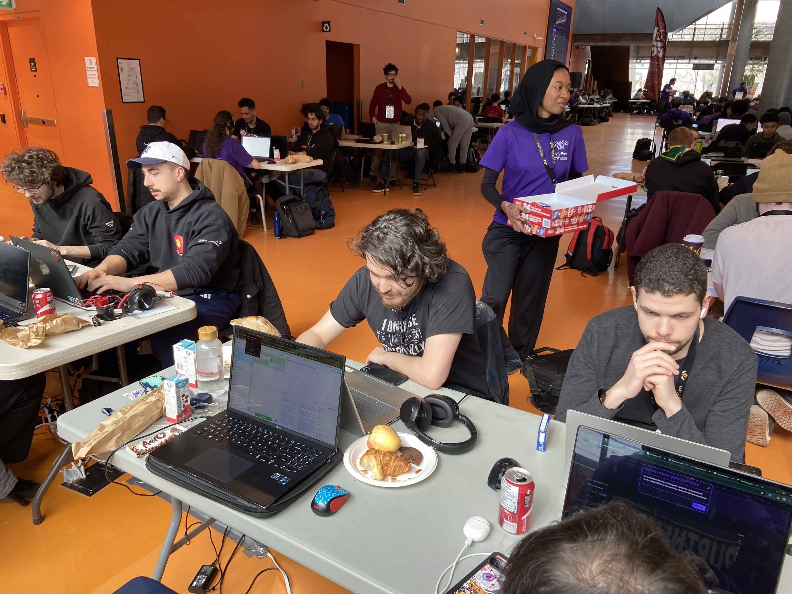

PolyPwn
Compétition informatique de CTF

Étudiant en génie logiciel à l'ÉTS | Passionné par l'innovation, les jeux et le code propre.
Je suis un étudiant motivé en génie logiciel à l'ÉTS, curieux, créatif et toujours prêt à relever de nouveaux défis. Mon objectif est de contribuer à des projets innovants où je peux combiner mon sens logique et ma passion pour la technologie. Je suis bilingue (français et anglais) et j'ai des notions d'espagnol.

Compétition informatique de CTF

This section has an image and a bit of text.

You can add as many cards as you want.